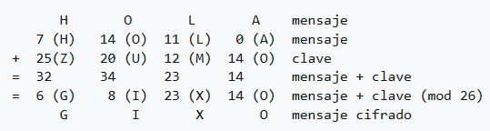
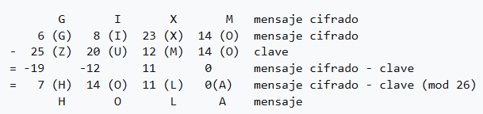
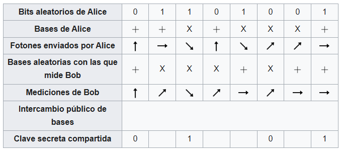
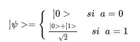

La criptografía cuántica es la criptografía que utiliza principios de la mecánica cuántica para garantizar la absoluta confidencialidad de la información transmitida. La criptografía cuántica como idea se propuso en 1970, pero hasta 1984 no se publicó el primer protocolo. Una de las propiedades más importantes de la criptografía cuántica es que si un tercero intenta espiar durante la creación de la clave secreta, el proceso se altera detectándose al intruso antes de que se transmita información privada. Esto es consecuencia del teorema de no clonado. La seguridad de la criptografía cuántica descansa en las bases de la mecánica cuántica, a diferencia de la criptografía de clave pública tradicional que descansa en supuestos de complejidad computacional no demostrada de ciertas funciones matemáticas. La criptografía cuántica está cercana a una fase de producción masiva, utilizando láseres para emitir información en el elemento constituyente de la luz, el fotón, y conduciendo esta información a través de fibras óptica.
Conceptos básicos
La criptografía es la disciplina que trata de la transmisión y almacenamiento de datos de manera que no puedan ser comprendidos ni modificados por terceros. Los diferentes métodos de criptografía actualmente utilizados necesitan que dos personas que deseen comunicar información intercambien de forma segura una o más claves; una vez que las claves han sido intercambiadas, los interlocutores pueden transferir información con un nivel de seguridad conocido. Pero esta forma de trabajar basa la seguridad de las transmisiones exclusivamente en el intercambio de claves. La forma más segura de realizar este intercambio de claves es de manera presencial, pero ello no es posible en la mayoría de los casos, dado el múltiple número de interlocutores con los que se desea intercambiar información confidencial (bancos, tiendas en Internet, colegas de trabajo en sedes distantes, etcétera). De manera que el punto donde hay menor seguridad en el intercambio de información confidencial está en el proceso de intercambio y transmisión de las claves. La mecánica cuántica describe la dinámica de cada partícula cuántica (fotones, electrones, etc.) en términos de estados cuánticos, asignando una probabilidad a cada posible estado de la partícula por medio de una función. Algunos aspectos a considerar de la mecánica cuántica:
- Superposición: Una partícula puede poseer más de un estado a la vez, en otras palabras, se encuentra en realidad "repartida" entre todos los estados que le sean accesibles.
- La medición no es un proceso pasivo como se suponía en la mecánica clásica, ya que altera al sistema.
- Colapso de estados: Una partícula que se encuentra repartida entre todos sus estados accesibles, al ser medida se altera su estado superpuesto determinando en qué estado particular, de entre una variedad de estados posibles, se encuentra.
- Incertidumbre: En la teoría cuántica, algunos pares de propiedades físicas son complementarias (por ejemplo, la posición y el momentum), en el sentido de que es imposible saber el valor exacto de ambas. Si se mide una propiedad, necesariamente se altera la complementaria, perdiéndose cualquier noción de su valor exacto. Cuanto más precisa sea la medición sobre una propiedad, mayor será la incertidumbre de la otra propiedad.
- Entrelazamiento: Dos partículas cuánticas pueden tener estados fuertemente correlacionados, debido a que se generaron al mismo tiempo o a que interactuaron, por ejemplo, durante un choque. Cuando esto ocurre se dice que sus estados están entrelazados, lo que provoca que la medición sobre una de ellas determina inmediatamente el estado de la otra, sin importar la distancia que las separe. Este fenómeno se explica aplicando las leyes de conservación del momento y de la energía. (ver Paradoja EPR)
Intercambio de claves cuánticas
El intercambio de claves cuánticas (QKD, del inglés "quantum key distribution", distribución cuántica de claves) es un método de comunicación seguro que implementa un protocolo criptográfico utilizando propiedades de la mecánica cuántica. Permite que dos partes produzcan una clave secreta aleatoria compartida que solo ellos conocen, que luego puede usarse para cifrar y descifrar mensajes. Una propiedad importante y única de la QKD es la capacidad de los dos usuarios que se comunican para detectar la presencia de un tercero que intenta obtener conocimiento de la clave. Esto resulta de un aspecto fundamental de la mecánica cuántica: el proceso de medición de un sistema cuántico en general perturba el sistema. Un tercero que intente espiar la clave debe de alguna manera medirla, introduciendo así anomalías detectables. Mediante el uso de superposiciones cuánticas o entrelazamiento cuántico y transmisión de información en estados cuánticos, se puede implementar un sistema de comunicación que detecte la escucha. Si el nivel de escucha está por debajo de un cierto umbral, se puede producir una clave que se garantiza que es segura (es decir, el espía no tiene información al respecto), de lo contrario, no es posible una clave segura y se interrumpe la comunicación. La distribución de claves cuánticas solo se usa para producir y distribuir una clave, no para transmitir ningún dato de mensaje. Esta clave se puede usar con cualquier algoritmo de cifrado elegido para encriptar (y descifrar) un mensaje, que luego puede transmitirse a través de un canal de comunicación estándar. El algoritmo más comúnmente asociado con la QKD es la libreta de un solo uso. El cifrado de la libreta de un solo uso es demostrablemente seguro. Consiste en emparejar el mensaje con una clave. La longitud de esta clave debe ser igual a la del mensaje, así cada bit del texto inicial se combina con otro bit de la clave realizando una suma modular. Por ejemplo, se supone que se quiere enviar el mensaje “HOLA”. Para ello, a cada letra del abecedario se le adjudicará un número de 0 a 26 (“A” es 0, “B” es 1, etc). Si se quiere encriptar el mensaje, se necesita una clave con el mismo número de letras, por ejemplo “ZUMO”.

Cada letra del mensaje se suma modularmente con la letra correspondiente de la clave, para asegurarnos de que el resultado de esta suma vuelve a ser un número entre 0 y 26 (es decir, una letra del abecedario). Por tanto, el mensaje que se envía en lugar de “HOLA” es “GIXO”. Con el mensaje cifrado en su poder, el receptor solo tiene que realizar el proceso inverso para descifrar el mensaje. Es decir, ahora hay que restar la clave al mensaje encriptado.

Protocolo general
La información cuántica permite que un emisor (Alice) envíe un mensaje a un receptor (Bob). Para ello disponen de lo siguiente
- Objetos cuánticos, es decir, objetos físicos que se comportan siguiendo las leyes de la física cuántica. En la práctica, estos objetos son fotones que pueden encontrarse en diferentes estados de polarización: pueden estar polarizados verticalmente (0), horizontalmente (1) o en cualquiera de los estados resultantes de superponer ambos. Dicha polarización puede ser detectada mediante el uso de filtros, que dejan pasar los fotones polarizados en un estado y absorben los polarizados en el otro.
- Un canal cuántico, que no es más que un canal físico de comunicación que puede transmitir información cuántica, así como clásica. Un ejemplo de canal cuántico es la conocida fibra óptica.
- Un canal clásico de comunicación que debe estar autentificado, es decir, Alice tiene que estar segura de que es a Bob a quien está enviando la información.
- Un algoritmo, que se encarga de manipular el mensaje para ocultarlo y hacerlo ilegible a terceros. Es decir, su función es la de encriptar el mensaje y desencriptarlo posteriormente para que pueda ser leído por el receptor. El algoritmo es conocido por las dos partes que se intercambian el mensaje, pudiendo llegar a ser incluso público. Es por ello que se necesita un elemento más para poder encriptar un mensaje.
- Una clave (secuencia de ceros y unos) conocida previamente por ambas partes, que es la que asegura que el proceso se mantenga privado, ya que como se ha dicho, el algoritmo puede ser de conocimiento público.
Detección de espionaje
La información clásica puede ser copiada sin que la información original se vea modificada. Por ello, trabajando con sistemas de comunicación clásicos no se puede saber con certeza si un mensaje ha sido manipulado por una tercera parte. Dicho de otro modo, en física clásica, Eva puede espiar y manipular el mensaje que Alice envía a Bob sin que ellos puedan descubrirlo. Sin embargo, en mecánica cuántica el hecho de medir hace que el estado cuántico inicial se perturbe, se modifique. Esto se traduce en que si Eva intercepta el mensaje, Alice y Bob pueden descubrirlo fácilmente. Este hecho viene garantizado por:
- El teorema de no clonado. Este teorema nos asegura que “no pueden existir máquinas o dispositivos de clonación cuánticas”. En otras palabras, no es posible hacer copias exactas de la información cuántica.
- El tercer postulado de la mecánica cuántica o de la reducción del paquete de ondas, que asegura que al realizar una medida sobre un estado cuántico, este se está modificando.
Información secreta
Primero, Alice y Bob evalúan el nivel de error y ruido que separan los dos conjuntos de datos. Las diferencias entre estos pueden provenir de:
- La intervención de Eva, que añade errores y ruido.
- Los errores y ruido de fondo, que no pueden ser evitados completamente.
Finalmente, si la cantidad de información ΔI = IAB - IE es superior a cero, es decir, la cantidad de espionaje permanece por debajo de cierto umbral, entonces se puede extraer una clave secreta de tamaño máximo ΔI de la trasmisión. En el caso contrario, ninguna extracción es posible y la transmisión debe ser interrumpida. En el caso en el que la información secreta, ΔI, sea superior a cero, Alice y Bob pueden empezar la extracción de la clave. Alice y Bob no comparten todavía una clave, sino datos correlacionados. La extracción se compone por dos etapas: la reconciliación y la amplificación de la confidencialidad.
Reconciliación de información
La reconciliación de información es una forma de corrección de errores realizada entre las claves de Alice y Bob, para garantizar que ambas claves sean idénticas. Se lleva a cabo a través del canal público y, como tal, es vital minimizar la información enviada sobre cada clave, ya que Eva puede leerla. Un protocolo común utilizado para la reconciliación de la información es el protocolo en cascada, propuesto en 1994. Este opera en varias rondas, con ambas claves divididas en bloques en cada ronda y comparando la paridad de esos bloques. Si se encuentra una diferencia en la paridad, entonces se realiza una búsqueda binaria para encontrar y corregir el error. Si se encuentra un error en un bloque de una ronda anterior que tenía la paridad correcta, entonces debe contenerse otro error en ese bloque; este error se encuentra y se corrige como antes. Este proceso se repite recursivamente. Después de que se hayan comparado todos los bloques, Alice y Bob reordenan sus claves de la misma manera aleatoria, y comienza una nueva ronda. Al final de múltiples rondas, Alice y Bob tienen claves idénticas con alta probabilidad; sin embargo, Eva tiene información adicional sobre la clave debido a la información sobre la paridad intercambiada. Últimamente, los turbocódigos, códigos LDPC y códigos polares se han utilizado para este propósito mejorando la eficiencia del protocolo en cascada.
Amplificación de la privacidad
La amplificación de la privacidad es un método para reducir y eliminar de manera efectiva la información parcial de Eva sobre la clave de Alice y Bob. Esta información parcial podría haberse obtenido tanto escuchando el canal cuántico durante la transmisión de la clave (introduciendo así errores detectables), como en el canal público durante la reconciliación de la información (donde se supone que Eva gana toda la información de paridad posible). La amplificación de privacidad utiliza la clave de Alice y Bob para producir una nueva clave más corta, de forma que Eva tenga una información insignificante sobre la nueva clave. Los bits de la clave pasan por un algoritmo que distribuye la ignorancia del espía sobre la clave final. De esta manera, la información del espía sobre la clave final puede hacerse arbitrariamente pequeña. En primera aproximación, el tamaño de la clave final es igual al tamaño de la información compartida antes de la reconciliación, disminuido por el número de bits conocidos por el espía y disminuido por el número de bits que han pasado por el canal público durante la corrección de errores.
Protocolo BB84
Este protocolo fue publicado en 1984 por Charles H. Bennett y Gilles Brassard, y con él se produce
el nacimiento de la criptografía cuántica.
En este protocolo, la transmisión se logra utilizando fotones polarizados enviados entre el emisor
(tradicionalmente de nombre Alice (en el lado A)) y el receptor (de nombre Bob (en el lado B))
mediante un canal cuántico, por ejemplo, una fibra óptica. Por otro lado, también se necesita la
existencia de un canal público (no necesariamente cuántico) entre Alice y Bob, como por ejemplo
Internet u ondas de radio, el cual se usa para mandar información requerida para la construcción la
clave secreta compartida. Ninguno de los canales necesita ser seguro, es decir, se asume que un
intruso (de nombre Eve) puede intervenirlos con el fin de obtener información.
Cada fotón representa un bit de información, cero o uno y la información se logra mediante la
codificación de estados no-ortogonales, por ejemplo rectilíneamente (horizontal y vertical) o bien
diagonalmente (en ángulos de 45° y 135°), como se muestra en la tabla de abajo. También se puede
ocupar una polarización circular (horario o antihoraria). Tanto Alice como Bob, pueden emitir
fotones polarizados
Primer paso: El protocolo comienza cuando Alice decide enviar una secuencia de fotones
polarizados a Bob. Para ello, Alice genera una secuencia aleatoria de bases, por ejemplo, entre
rectilíneas (+) y diagonales (x), la cual es almacenada momentáneamente. Una vez hecho esto, Alice
usa el canal cuántico para emitir a Bob un fotón polarizado al azar usando las bases que ella generó
(un fotón por cada base), registrando la polarización con la que fue emitido.
Alice tiene entonces la secuencia de bases utilizadas y la polarización de los fotones emitidos.
La mecánica cuántica dice que no es posible realizar una medición que distinga entre 4 estados de
polarización distintos si es que estos no son ortogonales entre sí, en otras palabras, la única
medición posible es entre dos estados ortogonales (base). Es así que por ejemplo, si se mide en una
base rectilínea, los únicos resultados posibles son horizontal o vertical. Si el fotón fue creado
con una polarización horizontal o vertical (con un generador de estados rectilíneo), entonces esta
medición arrojará el resultado correcto. Pero si el fotón fue creado con una polarización de 45° o
135° (generador diagonal), entonces la medición rectilínea arrojara un resultado de horizontal o
vertical al azar. Es más, después de esta medición, el fotón quedará polarizado en el estado en el
cual fue medido (horizontal o vertical), perdiéndose toda la información inicial de la polarización.
Segundo paso: Como Bob no sabe las bases que ocupó Alice para generar los fotones, no le queda
otra opción que medir la polarización de los fotones usando una base aleatoria generada por él
(rectilínea o diagonal).
Bob registra las bases que utilizó para medir los fotones y también los resultados de cada medición.
Tercer paso: Alice y Bob se contactan por medio del canal público para comunicarse las bases que
utilizaron para generar y leer respectivamente: Bob envía las bases que él usó y Alice envía las
bases que ella usó.
Ambos descartan las mediciones (bits) en donde no coincidieron en las bases (en promedio se descarta
la mitad de los bits). Los bits que quedaron fueron generados y medidos con la misma base, por lo
que la polarización registrada es la misma para Alice y para Bob.
Hasta este paso, en una comunicación ideal, Alice y Bob ya tienen una clave secreta compartida
determinada por los bits que quedaron.

Cuarto paso: Dado que puede existir alguna impureza en el canal cuántico o, peor aún, un intruso
pudo haber interceptado la transmisión de fotones, la polarización de los fotones pudo haber sido
alterada por lo que Alice y Bob deben comprobar que efectivamente los bits que no fueron descartados
coinciden en su valor.
Si un intruso intenta medir los fotones que mandó Alice, al igual que Bob no sabe con qué base se
generaron, por lo que tiene que realizar sus mediciones usando bases al azar lo que inevitablemente
introduciría una perturbación en los fotones enviados por Alice si es que no coinciden en la base.
Tampoco podría generar los fotones originales de Alice ya que el teorema de no-clonación garantiza
que es imposible reproducir (clonar) la información transmitida sin conocer de antemano el estado
cuántico que describe la luz.
Si un intruso intentó obtener información de los fotones entonces, con una alta probabilidad, la
secuencias de bits de Alice y Bob no coinciden. Con el fin de detectar la presencia del intruso,
Alice y Bob revelan segmentos de la clave generada. Si difieren en una cantidad superior a un mínimo
determinado, entonces se asume la existencia de un intruso y se aborta la comunicación.
Existen técnicas para que la información revelada de la clave sea lo menor posible (por ejemplo
usando funciones de Hash). También existen técnicas para poder reparar la secuencia de bits en caso
de que no haya habido un calce total (por ejemplo, en el caso de una interferencia).
Quinto paso: Para codificar un mensaje se puede utilizar el mismo canal cuántico con fotones
polarizados, o utilizar el canal público cifrando el mensaje con un algoritmo de cifrado, ya que la
clave para el cifrado se ha transmitido de manera absolutamente segura.
Protocolo B92
El protocolo B92 es un protocolo parecido al BB84. En este protocolo, se supone que Alice prepara un bit clásico aleatoriamente, a, y dependiendo del resultado envía a Bob el qubit:

De sus medidas, Bob obtiene el bit b, que puede tomar el valor 0 o 1, que corresponden a los estados -1 y +1 de las bases X y Z. Bob comunica el resultado b, pero manteniendo a' secreto. A continuación Alice y Bob seleccionan los bits en los que b=1, ya que b=0 solo si a=a' y b=1 ocurre si a'=1-a, y esto ocurre con una probabilidad del 50%. La clave final es a para Alice y 1-a' para Bob. En este protocolo, como es imposible para un espía medir los estados de Alice sin romper la relación entre Alice y Bob, estos pueden crear una clave de bits y a la vez establecer un límite para el ruido y espionaje durante la comunicación.
Algoritmos en la criptografía cuántica
Algoritmo de Shor: Fue propuesto por Peter Shor en el año 1994. Este algoritmo logró demostrar una
reducción exponencial en el tiempo de cálculo para la realización de factorizaciones en número primos.
Este algoritmo realiza los procesos en paralelo por ello las compuertas cuánticas son capaces de
realizar un número determinado de cálculo en forma simultánea. Para la resolución de problemas este
algoritmo emplea matemáticas asociadas a la teoría de números, el análisis de Fourier, números
complejos, entre otros. Este algoritmo dejaría obsoleto a algoritmos como el RSA.
Algoritmo de Grover: Fue inventado por Lov K. Grover en 1996. Es un algoritmo de carácter
probabilístico, por lo que produce la respuesta correcta con una determinada probabilidad de error, que,
no obstante, puede obtenerse tan baja como se desee por medio de iteraciones. Este algoritmo tiene
múltiples implementación entre ellas la criptografía, podría aplicar fuerza bruta a una clave
criptográfica simétrica de 128 bits en aproximadamente 2^64 iteraciones, o una clave de 256 bits en
aproximadamente 2^128 iteraciones, este puede no ser necesariamente el algoritmo más eficiente.
Algoritmo de Deutsch-Jozsa: Es un algoritmo cuántico determinista propuesto por David Deutsch y
Richard Jozsa en 1992. Este algoritmo es de poco uso práctico actual, es uno de los primeros ejemplos de
un algoritmo cuántico que es exponencialmente más rápido que cualquier posible algoritmo clásico
determinista. Este proporciona una solución para un caso específico simple y devuelve una función
booleana (Falso o Verdadero) por lo que se vuelve determinista comparando dos funciones.
Algoritmos de encriptación
Para entender qué son los algoritmos de encriptación se desarrollará primero qué es y cómo funcionan. Se entiende como algoritmo para encriptación a una función matemática usada en los procesos de encriptación y desencriptación. Trabaja en combinación con una llave (un número, palabra, frase, o contraseña) para encriptar y desencriptar datos. Para encriptar, el algoritmo combina matemáticamente la información a proteger con una llave provista. El resultado de este cálculo son los datos encriptados. Para desencriptar, el algoritmo hace un cálculo combinando los datos encriptados con una llave provista, siendo el resultado de esta combinación los datos desencriptados (exactamente igual a como estaban antes de ser encriptados si se usó la misma llave). Si la llave o los datos son modificados el algoritmo produce un resultado diferente. Tenemos que estos algoritmos se dividen en tres tipos:
- Algoritmo simétrico: O bien conocidos como clave secreta encripta y desencripta con la misma llave. Las principales ventajas de los algoritmos simétricos son su seguridad y su velocidad. Entre estos se encuentran: DES, RC2, IDEA, Blowfish, etc.
- Algoritmo asimétrico: O clave pública se caracteriza por usar una clave para encriptar y otra para desencriptar. Una clave no se derivará de la otra. Emplean longitudes de clave mucho mayores pero la complejidad de cálculo que comportan los hace más lentos. Por ello, los métodos asimétricos se emplean para intercambiar la clave de sesión mientras que los simétricos para el intercambio de información dentro. Acá se encuentran los siguientes: RSA, ElGamal, Diffie-Hellman, etc.
- HASH: Una función o método para generar claves o llaves que representen de manera casi unívoca a un documento, registro, archivo, etc., resumir o identificar un dato a través de la probabilidad, utilizando una función hash o algoritmo hash. Un hash es el resultado de dicha función o algoritmo. Entre estos están el: MD5, DSA, SHA-1, entre otros.
Implementación de la criptografía cuántica
Experimental
En el 2008 se consiguió el sistema de intercambio de bits más alto hasta el momento, con claves seguras a 1 Mbit/s, en más de 20 km de fibra óptica, y 10 kbit/s, en más de 100 km de fibra. Fue logrado mediante una colaboración entre la Universidad de Cambridge y Toshiba, utilizando el protocolo BB84. En agosto de 2015, la Universidad de Ginebra y Corning Inc. lograron la distancia de QKD más larga para fibra óptica (307 km). En el mismo experimento, se generó una tasa de intercambio de clave secreta de 12,7 kbit/s, convirtiéndola en la tasa de bits más alta para sistemas trabajando a distancias mayores de 100 km. En junio de 2017, los físicos dirigidos por Thomas Jennewein en el Instituto de Computación Cuántica y la Universidad de Waterloo en Waterloo, Canadá, lograron la primera demostración de la distribución de claves cuánticas desde un transmisor terrestre a un avión en movimiento. Reportaron enlaces ópticos con distancias entre 3-10 km y generaron claves seguras de hasta 868 kilobytes de longitud. También en junio de 2017, físicos chinos dirigidos por Pan Jianwei de la Universidad de Ciencia y Tecnología de China midieron fotones entrelazados a una distancia de 1203 km entre dos estaciones terrestres, sentando las bases para futuros experimentos intercontinentales de QKD. Más adelante en ese mismo año, el protocolo BB84 se implementó con éxito a través de enlaces de satélite desde Micius (que forma parte del proyecto chino de experimentos cuánticos a escala espacial, y que fue apodado así en honor al filósofo Mozi) a estaciones terrestres en China y Austria. Las claves se combinaron y el resultado se usó para transmitir imágenes y videos entre Pekín y Viena.
Comercial
Algunas compañías que ofrecen sistemas comerciales de distribución de claves cuánticas son: ID Quantique (Ginebra) o MagiQ Technologies, Inc. (Nueva York). En 2004, se llevó a cabo la primera transferencia bancaria del mundo utilizando QKD en Viena, Austria. La tecnología de cifrado cuántico proporcionada por la empresa suiza Id Quantique se utilizó en el cantón suizo de Ginebra para transmitir los resultados de la votación a la capital en las elecciones nacionales que tuvieron lugar el 21 de octubre de 2007.